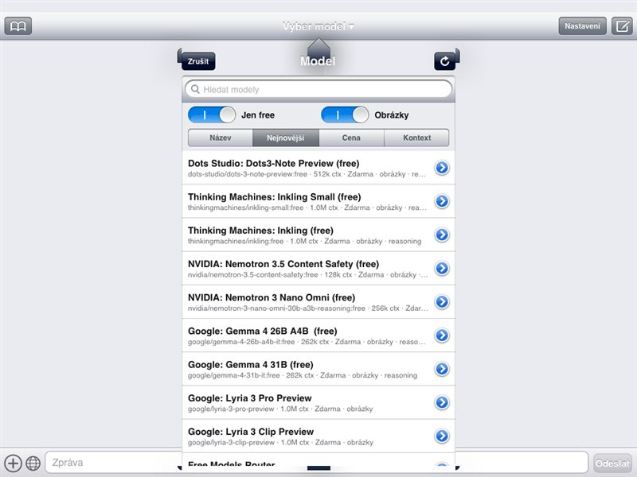
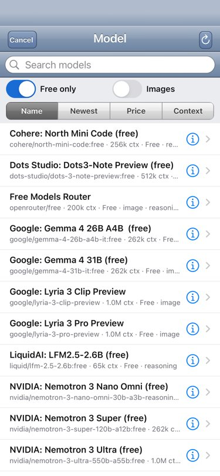

AI Chat
AI chat: 26 provider presets, custom APIs and local models
AI chat: 26 provider presets, custom APIs and local models
Chat directly with your chosen API provider or a local model server. Use a preset or enter a compatible API URL, key and model ID. Keys and model lists stay separate per provider and endpoint. Streaming, Markdown, LaTeX, personas and local chat history in the classic iOS 6 interface.


Unofficial apps by samcejko, not affiliated with or endorsed by Twitch, Google, Apple, TikTok, Instagram, Meta, Spotify, Kick, NVIDIA, Mojang, Microsoft, OpenRouter, Vine, X, diVine or the Moonlight, Sunshine and Apollo projects.